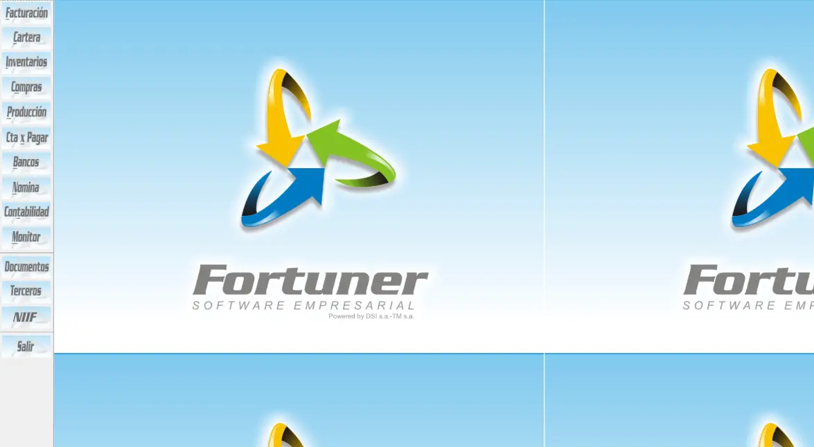
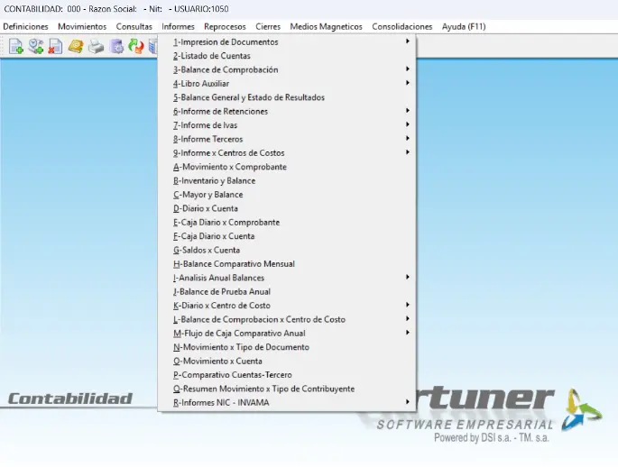
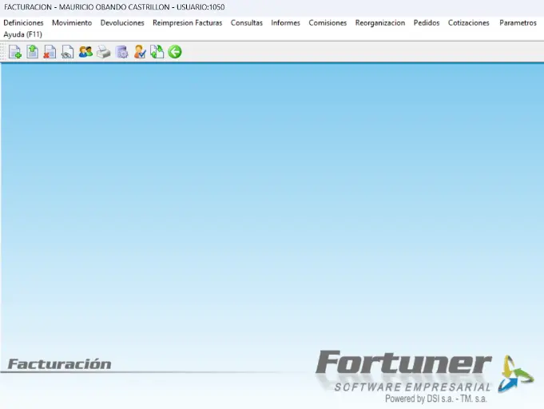
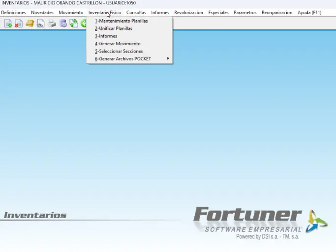

Gestión financiera
Contabilidad, cartera, cuentas por pagar, bancos, presupuesto, activos fijos y facturación electrónica.
FinanzasGestione ventas, inventarios y finanzas en una solución empresarial integrada.
Una solución empresarial de DSI para organizaciones con más de 20 usuarios concurrentes, según información publicada por DSI.
Conecte los procesos de su empresa y consulte la información que necesita para tomar decisiones.
Contabilidad, cartera, cuentas por pagar, bancos, presupuesto, activos fijos y facturación electrónica.
FinanzasCompras, inventarios, manufactura, pedidos, recibo de mercancía, movilidad e intercambio de documentos.
LogísticaPOS, administración POS, domicilios, fidelización, verificadores de precios y dispositivos móviles.
VentasNómina, nómina electrónica e inteligencia de negocios para apoyar el seguimiento de la operación.
AdministraciónDSI presenta Fortuner como una solución empresarial para organizaciones de más de 20 usuarios concurrentes. Su enfoque integra sucursales o seccionales y facilita consultar reportes e información para la gestión administrativa y gerencial.

Vista referencial del panel FortunerConozca algunas vistas de Fortuner. La interfaz puede variar según su configuración.

Consultas y procesos contables dentro del entorno Fortuner.

Herramientas relacionadas con facturación y cartera.

Funciones de inventario integradas con otros procesos empresariales.
Descubra sus módulos y consulte las opciones de implementación con DSI.